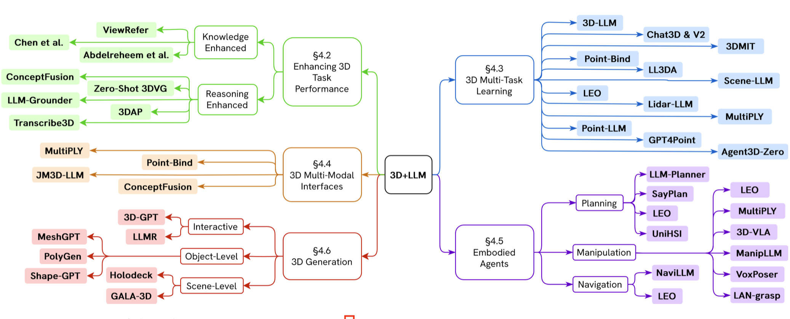
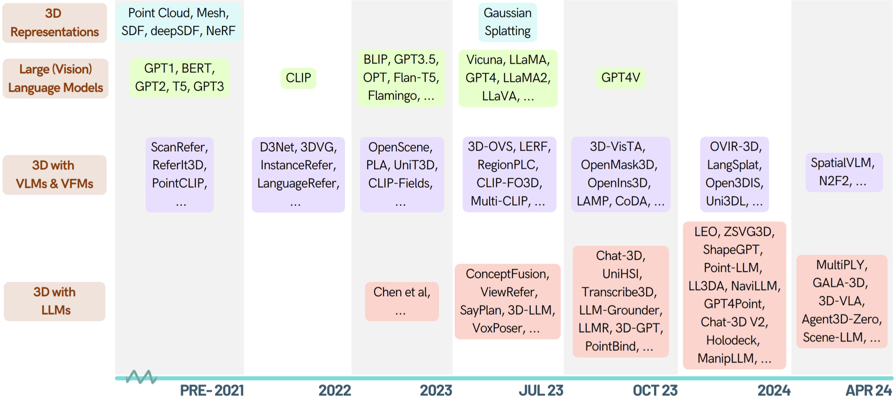
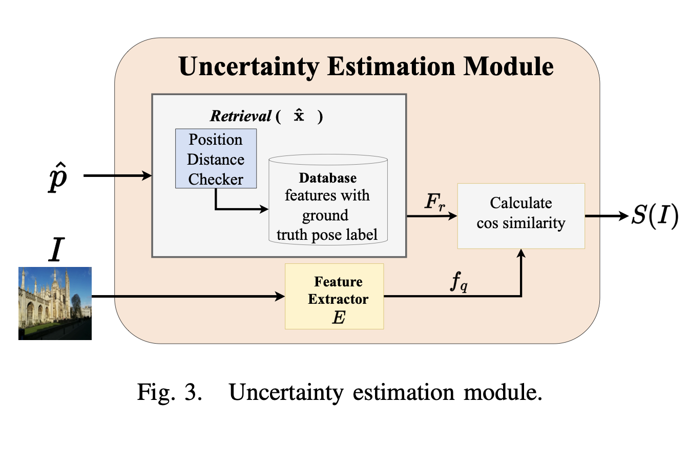
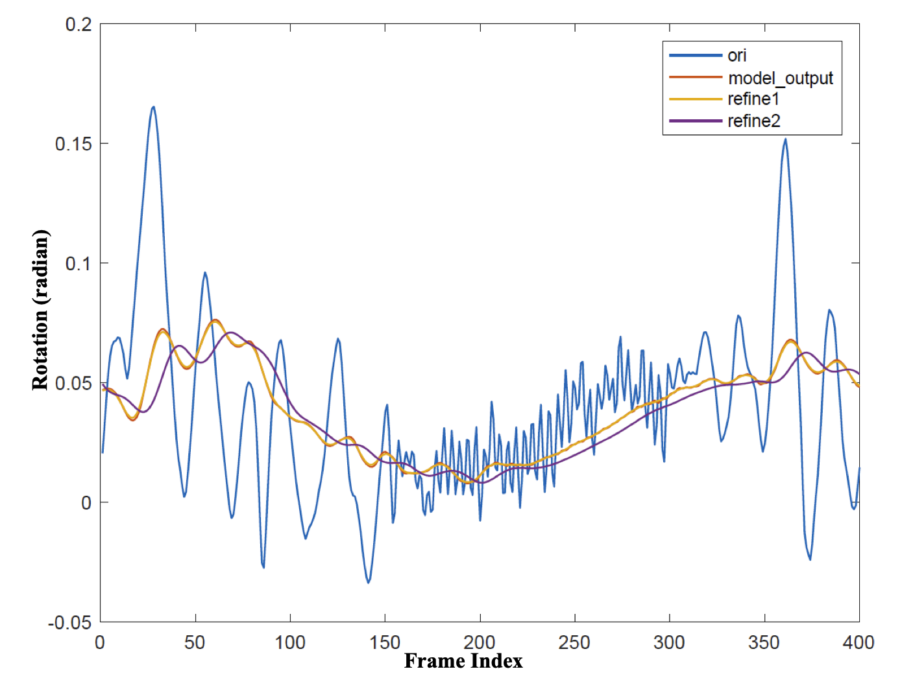

I am a senior research scientist at Niantic Spatial. I completed my PhD (in 2025) in the Active Vision Laboratory at the University of Oxford, supervised by Prof. Victor Adrian Prisacariu. During my doctorate I interned as a research scientist at Niantic Labs and Meta Reality Lab.
Before my PhD, I was a senior AI algorithm engineer and team leader at Huawei Technologies, leading several commercially successful computer vision and computational photography projects for Huawei/Honor flagship smartphones.
I received my Master’s and Bachelor’s degrees in Electrical Engineering from the University of Southern California.
I’m interested in 3D Vision, Computational Photography, and multi-modal AI.

|
Xianzheng Ma*, Tao Sun*, Shuai Chen, Yash Bhalgat, Jindong Gu, Angel X. Chang, Iro Armeni, Iro Laina, Songyou Peng, Victor Adrian Prisacariu ICLR, 2026 project page / paper / code / data Text-only models can match 3D-LLMs on popular 3D-QA benchmarks, exposing linguistic shortcuts; we introduce Real-3DQA and a 3D-reweighted training objective to stress-test and improve genuine spatial reasoning. |

|
Changkun Liu, Shuai Chen, Yash Bhalgat, Siyan Hu, Zirui Wang, Ming Cheng, Victor Prisacariu, Tristan Braud ICLR, 2025 project page / paper / code Efficient camera pose refinement using 3D Gaussian Splatting and 3D foundation model MASt3R. |
|
  |
Xianzheng Ma*, Yash Bhalgat*, Brandon Smart*, Shuai Chen, Xinghui Li, Jian Ding, Jindong Gu, Dave Zhenyu Chen, Songyou Peng, Jiawang Bian, Philip Torr, Marc Pollefeys, Matthias Nießner, Ian D Reid, Angel X. Chang, Iro Laina, Victor Prisacariu arXiv, 2024 paper A survey paper that provides a comprehensive overview of the methodologies enabling LLMs to process, understand, and generate 3D data. |

|
Eric Brachmann, Jamie Wynn, Shuai Chen, Tommaso Cavallari, Áron Monszpart, Daniyar Turmukhambetov, Victor Prisacariu ECCV, 2024 Oral (2.3%) project page / paper / code A novel learning-based structure-from-motion (SfM) method using scene coordinate regression. |

|
Shuai Chen, Tommaso Cavallari, Victor Prisacariu, Eric Brachmann CVPR, 2024 Highlight (11.9%) project page / paper / code A scene-agnostic pose regression network that maps scene-specific representations to 6-DoF camera poses, enabling APRs to adapt to new scenes in 5 minutes. |

|
Shuai Chen, Yash Bhalgat, Xinghui Li, Jiawang Bian, Kejie Li, Zirui Wang, Victor Prisacariu CVPR, 2024 project page / paper / code A post-process for refining generic APRs using neural feature fields. |
|
 
|
Changkun Liu, Shuai Chen, Yukun Zhao, Huajian Huang, Victor Prisacariu, Tristan Braud ICRA, 2024 project page / paper / code An APR-agnostic framework that accelerates pose refinement via pose-retrieval and uncertainty estimation. |

|
Shuai Chen, Xinghui Li, Zirui Wang, Victor Prisacariu ECCV, 2022 project page / paper / code Leveraging luma-prior NeRF and direct feature matching to enhance 6-DoF camera pose regression approaches. |
|
 
|
Chen Li, Li Song, Shuai Chen, Rong Xie, Wenjun Zhang, IEEE Transactions on Multimedia, 2022 paper Real-time and data driven video stabilization using IMU sensors. |

|
Shuai Chen, Zirui Wang, Victor Prisacariu 3DV, 2021 project page / paper / code 6-DoF camera pose regression with NeRF-based differentiable renderer. |
Reviewer: ECCV 2022, 2024, 2026; CVPR 2023, 2024, 2026; ICCV 2023, 2025*; ICRA 2024; RA-L 2024, 2025; NeurIPS 2025
* Outstanding Reviewer (Top 3%)